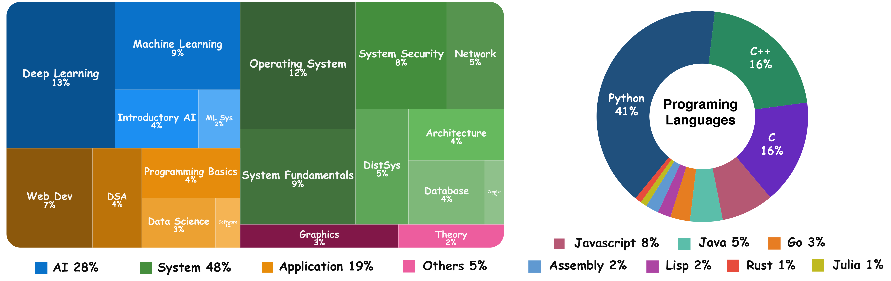
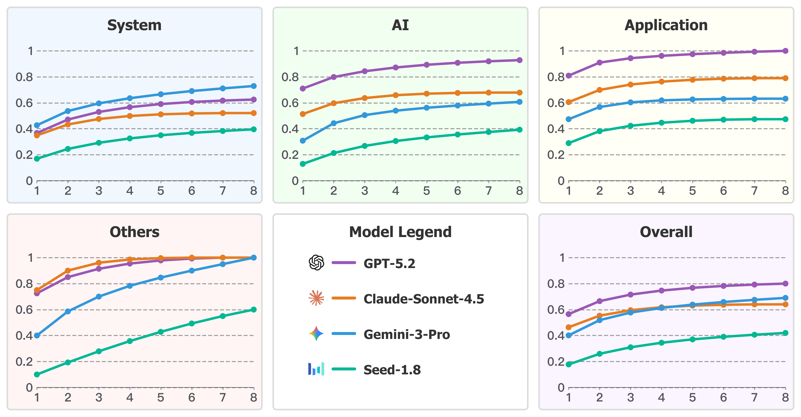

Leaderboard
We evaluate 9 state-of-the-art LLMs using a minimalist agent loop with stateless Bash execution and file editing tools. Each task allows up to 50 interaction rounds. Results are averaged over 4 independent runs (avg@4).
Performance by Category
| Model | System (48) | AI (28) | Application (19) | Others (5) | Overall (100) |
|---|---|---|---|---|---|
| GPT-5.2 OpenAI | 36.46% | 69.64% | 77.63% | 75.00% | 55.50% |
| Sonnet-4.5 Anthropic | 32.81% | 49.11% | 60.53% | 90.00% | 45.50% |
| Gemini-3-Pro Google | 41.15% | 30.36% | 46.05% | 40.00% | 39.00% |
| DeepSeek-V3.2 DeepSeek | 13.02% | 27.68% | 38.16% | 15.00% | 22.00% |
| Seed-1.8 ByteDance | 15.10% | 11.61% | 26.32% | 15.00% | 16.25% |
| GLM-4.7 Zhipu AI | 10.42% | 22.32% | 18.42% | 15.00% | 15.50% |
| Qwen3-Coder Alibaba | 6.25% | 17.86% | 9.21% | 10.00% | 10.25% |
| Kimi-K2 Moonshot AI | 6.25% | 17.86% | 9.21% | 5.00% | 10.00% |
| Minimax-M2 MiniMax | 6.25% | 9.82% | 11.84% | 10.00% | 8.50% |
Model performance by category. Numbers in parentheses indicate the number of tasks. All results are avg@4.
Abstract
While LLM-based coding agents have advanced to repository-scale engineering, existing benchmarks predominantly focus on software maintenance, overlooking the foundational capability of system construction.
We introduce CSBench, a benchmark evaluating project-level Spec-to-Code implementation across core computer science domains (e.g., OS, compilers, databases). CSBench features 100 expert-curated tasks from top-tier university assignments within containerized environments.
Evaluating 12 state-of-the-art LLMs reveals a stark performance disparity: even top-tier models like GPT-5.2 see success rates plummet from over 90% in algorithmic tasks to below 35% in system-level domains. Our analysis identifies a fundamental deficiency in systemic reasoning and construction knowledge as the primary bottleneck, where agents either terminate prematurely due to overconfidence or fail to translate execution feedback into valid architectural fixes.
Key Highlights
🏗️ Systematic Domain Coverage
100 tasks spanning 19 sub-topics across 4 major categories (Systems, AI, Application, Others), evaluating broad "CS mastery" rather than just language proficiency.
🧠 Deep Reasoning Requirements
Tasks require implementing complex systems from scratch — B+ Trees, TCP stacks, OS kernels — demanding long-horizon planning and strict logical consistency beyond simple pattern matching.
🎓 Pedagogical Rigor
Sourced from top-tier university assignments (MIT, Berkeley, Stanford, etc.), each task comes with expert-curated test suites and containerized Docker environments for reproducible evaluation.
Dataset Statistics Comparison
| Metric | Attribute | SWE-Bench | Multi-SWE-Bench | CSBench | |||
|---|---|---|---|---|---|---|---|
| Mean | Max | Mean | Max | Mean | Max | ||
| Task Specification | Length (words) | 195.1 | 4,477 | 550.6 | — | 676.2 | 5,693 |
| Initial Code | # Files (non-test) | 3,010 | 5,890 | 3,817.5 | — | 77.8 | 1,168 |
| # Lines (non-test) | 438K | 886K | 178.6K | — | 185K | 657K | |
| Gold Patch | # Lines edited | 32.8 | 5,888 | 163.3 | — | 902.3 | 25K |
| # Hunks edited | — | — | 11.7 | — | 28.1 | 1,530 | |
| # Files edited | 1.7 | 31 | 4.89 | — | 10.6 | 363 | |
| Test Suite | # Fail to Pass | 9.1 | 1,633 | 6.26 | — | 13.7 | 63 |
| # Total | 120.8 | 9,459 | 2,241.2 | — | 17.0 | 68 | |
CSBench requires an order-of-magnitude more implementation effort (902 lines edited on average vs. 33 in SWE-Bench), reflecting genuine system construction complexity.
Benchmark Design
Each CSBench task is formally defined as a tuple T = (S, Cinit, U, E): a Specification, Initial Scaffold, Test Suite, and a containerized Environment. Given (S, Cinit), a model produces a completed implementation; a task is solved when all tests pass inside the Docker container.
Three-Stage Construction Pipeline
CSBench employs an adversarial, expert-in-the-loop workflow to transform heterogeneous courseware into standardized, execution-based benchmark tasks.
Sourcing
Candidate projects sourced from open-source CS courses at top-tier universities, organized by a comprehensive topic taxonomy (System, AI, Application, Others). Priority given to projects with non-trivial, multi-file starter scaffolds.
Annotation
Domain experts construct task artifacts with adversarial review: Annotators build scaffold code, specifications, and test suites; independent Reviewers audit outputs and iterate until strict criteria are met.
Quality Assurance
Three-layer verification: Automated checks (solvability, layout), AI-assisted auditing (leakage, ambiguity), and Human-in-the-loop decision (spec fidelity, runtime stability).

The three-stage construction pipeline of CSBench: Sourcing, Annotation, and Quality Assurance.
Domain & Language Distribution
CSBench spans 4 high-level topics and 19 sub-topics, ensuring systematic domain representation. It covers Python (41%), C/C++ (32%), and other mainstream languages including Java, JavaScript, Go, Rust, and Assembly.

Left: Task distribution by course topic taxonomy. Right: Programming language distribution across CSBench tasks.
Benchmark Case Index
The released CSBench dataset can be explored by task type. Select a category or sub-category to inspect representative tasks, then switch between the compact task description view and the complete data record view.
Data is loaded from
BytedTsinghua-SIA/CSBench. The compact view shows only
task_desc, specification, and scaffold_desc; the
full view shows every field in the dataset row.
Case Preview
Select a task to preview
This index is grouped by CSBench task category and sub-category, and supports both compact benchmark-case descriptions and complete dataset-row inspection.
Detailed Results
Detailed Performance by Topic (Top 3 Models)
| Topic | GPT-5.2 | Sonnet-4.5 | Gemini-3-Pro |
|---|---|---|---|
| System (48 tasks) | |||
| Operating System (12) | 37.50% | 45.83% | 27.08% |
| System Fundamentals (9) | 19.44% | 30.56% | 33.33% |
| System Security (8) | 56.25% | 43.75% | 56.25% |
| Computer Network (5) | 60.00% | 35.00% | 50.00% |
| Parallel & Distributed (5) | 20.00% | 20.00% | 45.00% |
| Computer Architecture (4) | 31.25% | 31.25% | 62.50% |
| Database System (4) | 31.25% | 0.00% | 43.75% |
| Compiler (1) | 25.00% | 0.00% | 0.00% |
| AI (28 tasks) | |||
| Deep Learning (13) | 71.15% | 46.15% | 36.54% |
| Machine Learning (9) | 94.44% | 72.22% | 36.11% |
| Introductory AI (4) | 37.50% | 31.25% | 12.50% |
| ML System (2) | 12.50% | 0.00% | 0.00% |
| Application (19 tasks) | |||
| Web Development (7) | 85.71% | 75.00% | 25.00% |
| Data Struct & Algo (4) | 93.75% | 81.25% | 50.00% |
| Programming Fundamentals (4) | 50.00% | 75.00% | 100.00% |
| Data Science (3) | 66.67% | 0.00% | 33.33% |
| Others (5 tasks) | |||
| Computer Graphics (3) | 58.33% | 100.00% | 50.00% |
| Mathematics (2) | 100.00% | 75.00% | 25.00% |
| Overall (100) | 55.50% | 45.50% | 39.00% |
Pass@k Analysis
Pass@k metrics show GPT-5.2 maintains a steady lead in AI and Application categories, while Gemini-3-Pro demonstrates superior performance in the System category, consistently outperforming GPT-5.2 across all k values.

Pass@k performance of representative models across different task categories.
Citation
If you find CSBench useful in your research, please cite:
@inproceedings{csbench2026,
title = {CSBench: A Comprehensive Benchmark for Evaluating
Project-Level System Construction in Computer Science},
author = {Anonymous},
booktitle = {Proceedings of the 43rd International Conference
on Machine Learning (ICML)},
year = {2026}
}